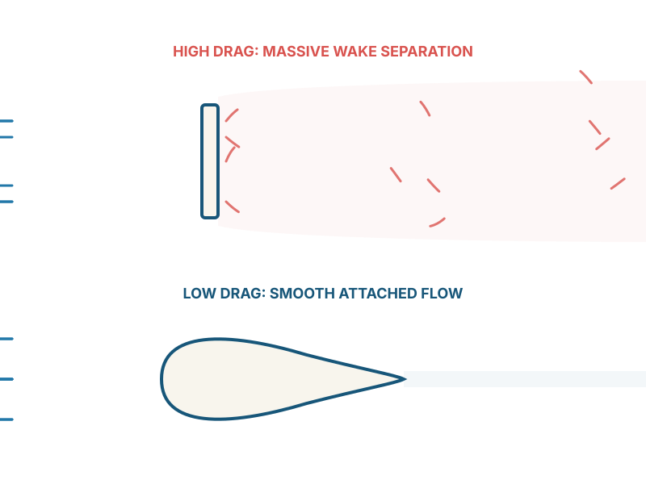
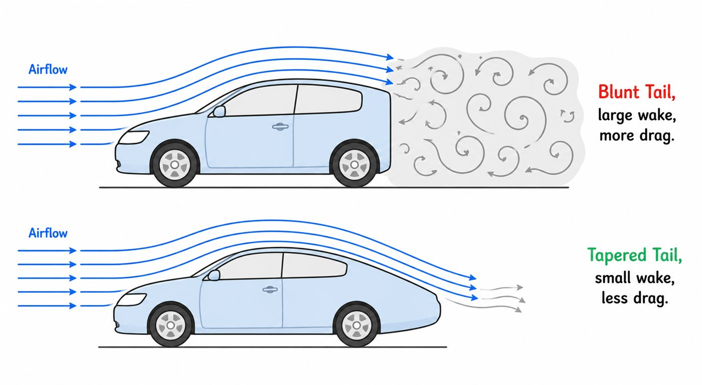
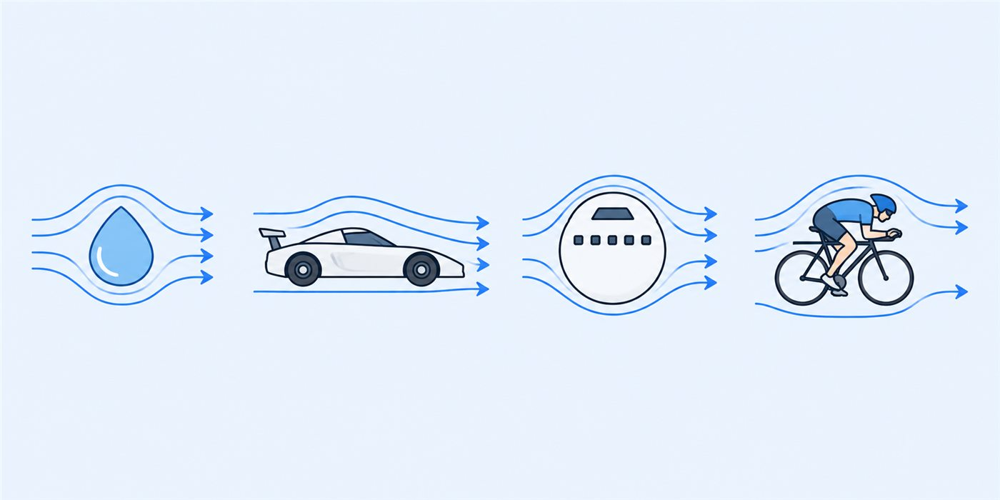

01 — THE INVISIBLE ENEMY
Why does drag deserve its own lesson?
Drag is the resistance a shape feels while trying to move forward through air.
It may sound less exciting than downforce, but drag consumes part of the engine's power every second the car is moving. Some horsepower accelerates the car; some is spent simply pushing air aside.
Understanding drag means understanding where a huge portion of a fast car's performance can be spent—or wasted.
02 — FEEL IT YOURSELF
What is drag physically?
Hold your palm into the wind from a moving car window and air pushes it backward. Turn your hand edge-on and the push becomes smaller. Same hand, same air and same speed—only the presented shape changed.
Drag depends enormously on shape and orientation, not only on speed. Two equal-sized objects can produce very different drag.
Drag also grows roughly with speed squared. At three times the speed, aerodynamic resistance can be around nine times larger under similar conditions.
03 — WHERE DRAG COMES FROM
The two useful categories
Caused by how the overall shape moves air aside and by the pressure difference between its front and rear.
Created by shear stress as air moves along the object's surface.
A flat board facing the flow creates large pressure drag. A streamlined teardrop guides air around itself and lets it recover more gently behind. For vehicle shapes, managing pressure drag and separation is often the larger opportunity.
Surface texture is not simply “rough equals bad.” Golf-ball dimples energise the boundary layer, delay separation and shrink pressure drag enough to outweigh their friction cost.

04 — THE MESS LEFT BEHIND
Wake regions and separation
When air can no longer follow a surface, it separates and leaves a low-pressure, swirling region behind the object. That disturbed region is the wake—similar to choppy water behind a boat.
A large wake means the object has transferred more energy and momentum to the air. The associated pressure imbalance contributes directly to drag.

Can the rear shape release the airflow without asking it to turn too sharply or separate too early?
05 — COMPARING SHAPES
Drag coefficient, Cd
Drag depends on speed, air density, frontal area and shape. The drag coefficient packages the shape-related behaviour into a useful dimensionless number so engineers can compare designs more fairly.
A streamlined teardrop may have a very low coefficient, while a flat plate facing the wind can be near or above 1 depending on its exact conditions. A race car sits between those extremes because it must also cool components, house people and machinery, obey rules and generate downforce.
06 — SEE IT EVERYWHERE
Why this matters for racing
Drivers tuck in and bodywork stays low to expose less area to the flow.
Tapered tails help reduce separation and wake size.
Cooling and downforce often add drag, so nothing is designed in isolation.

Every moving object pays a drag price. Engineers ask how to pay as little as possible while still doing everything else the vehicle needs to do.
WATCH & EXPLORE
Make drag tangible
Compare the palm-forward and edge-on hand positions on camera.
A future blunt-vs-tapered model would fit here, but these diagrams already carry the idea.
GO DEEPER
Books worth opening
Race Car Aerodynamics — Joseph KatzForm drag, wake regions and motorsport-specific compromises.
Understanding Aerodynamics — Doug McLeanApproachable deeper physics of separation and wake formation.
Manufacturer aerodynamic dataComparing published Cd and CdA values is a useful real-world exercise.
Finished this lesson? Mark it as complete to track your progress.